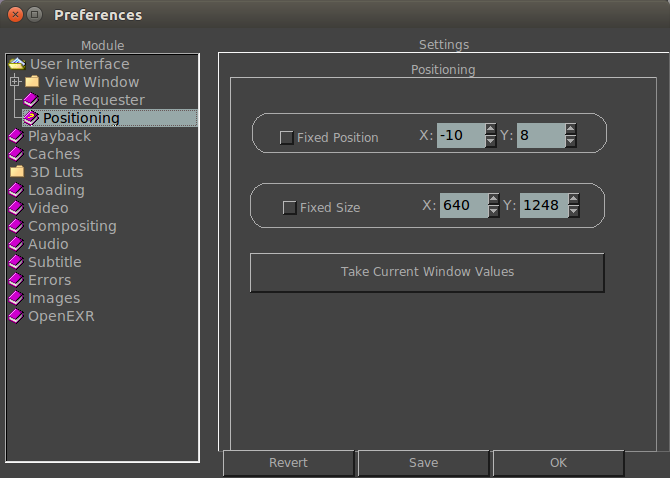

 |
When active, here you can set the X and Y position of the main mrViewer window. When active, here you can set the default window size of mrViewer when it starts. This button, when clicked on, allows taking the current window values and filling in the Fixed Position and Fixed Size for you. |